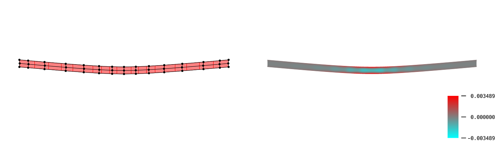

Elastic Surface Embedding
TL;DR
You can make a holdable smooth surface model with this repository.

The main part of this project is how to determine a planer shape from a strip on curved surface. In mathematics, this mapping is called "embedding". We determined the embedding by minimizing its elastic strain energy. This is the meaning of "Elastic Surface Embedding".
Overview: How to make a surface model
step 1 : Define a shape of surface (and split into strips)
The definition must consists of parametric mapping and its domain. For example, a paraboloid can be parametrized as below.
\[\begin{aligned} \bm{p}_{[0]}(u^1, u^2) &= \begin{pmatrix} u^1 \\ u^2 \\ (u^1)^2 + (u^2)^2 \end{pmatrix} \\ D &= [-1,1]\times[-1,1] \end{aligned}\]
The domain $D$ will be split into $D_i$.
\[\begin{aligned} D_i &= [-1,1]\times\left[\frac{i-1}{10},\frac{i}{10}\right] & (i=1,\dots,10) \end{aligned}\]
step 2 : Numerical analysis
This is the main part. Split the surface into pieces, and compute the Eucledian embedding. For more information, read numerical computation section. The image below is a result for the domain $D_1$.

step 3 : Edit on vector graphics editor
The output files are SVG format. After editing the svg files, you can print the graphics or cut papers by laser cutting machine.

step 4 : Craft a paper model
This is the final step. Cut papers into strips, and weave them into surface.

Directions: If you like..
..making crafts ✂️

..computing üíª

..mathematics or physics üåê

- Mathematical model: Nonlinear elasticity on Riemannian manifold
- Geometric representation: B-spline manifold
- Numerical analysis: Galerkin method, Newton-Raphson method
..me! üê¢

- Follow my twitter account!
- Visit my website!
- Read my paper on arXiv!
- Give star to this repository!